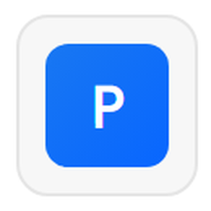
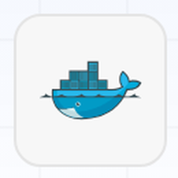

CronosVEJA ANTES · AJA ANTESTemplate · slide 10
Descrição da arquitetura
 Python
Python
 pandas
pandas
As cinco camadas e o que roda em cada uma
1Fontes de dados
A planilha oficial da Locaweb e a lista de feriados nacionais que ela não traz.
xlopenpyxl
 holidays
holidays
holidays
2Pipeline de ingestão
Leitura, limpeza e o campo Entrou para KPI?, que deixa 25.600 elegíveis.
Python
pandas
3Armazenamento
Parquet e JSON gravados pelos notebooks. A aplicação carrega 350 kB uma vez por processo.
painel.jsondias.jsonfila.parquet
papyarrow
4Processamento
Volume diário por prioridade no Prophet, risco por incidente na regressão logística.

Prophet skscikit-learn5Visualização e análise
Seis abas com URL própria, gráficos no navegador e uma imagem que sobe em qualquer infraestrutura.
Django
Plotly
pltmatplotlib

DockerCronos · Super Data Bros · 2TSCOAChallenge FIAP 2026 com Locaweb